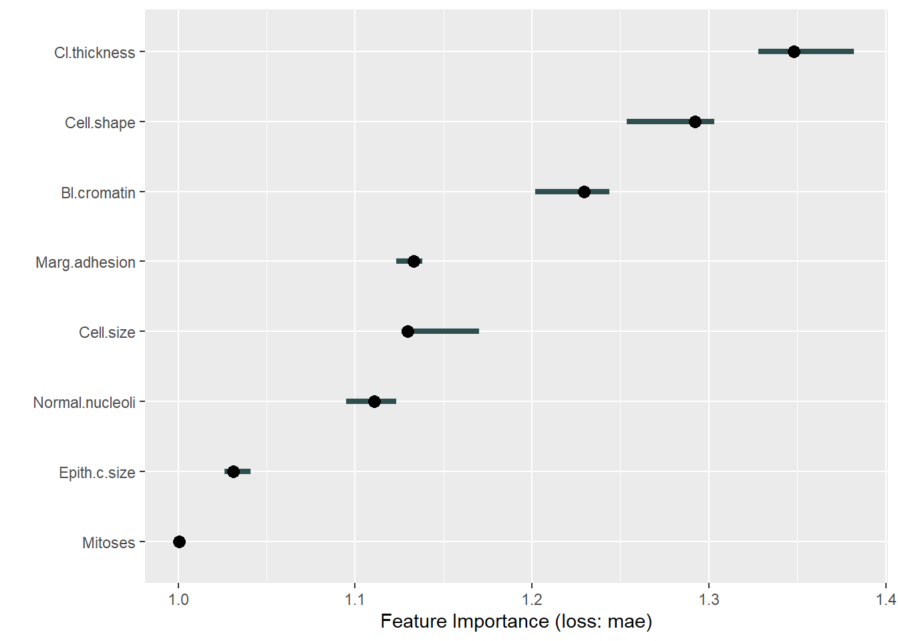
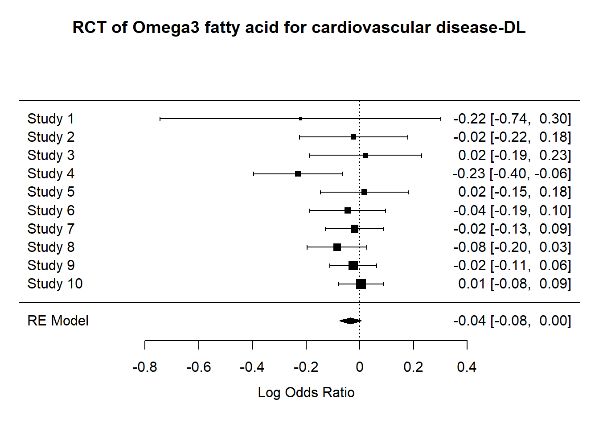

Chapter 4 Statistics
This section is not intended as a textbook on statistics. Rather it demonstrates regression approaches that can be used including sample size estimation, R codes provided.
4.1 Univariable analyses
4.1.1 Parametric tests
T-test is the workhorse for comparing if 2 datasets are have the same distribution. Performing t-test in R requires data from 2 columns: one containing the variables for comparison and one to label the group. There are different forms of t-test depending on whether the two samples are paired or unpaired. In general, the analysis takes the form of \(t=\frac{\mu_1 - \mu_2}{variance}\). It is recommended to check the distribution of the data by using histogram. For this exercise, we will use the simulated data from ECR trials. The grouping variable is the trial assignment.
#comparison of early neurological recovery (ENI) by tral (T)
dtTrial<-read.csv("./Data-Use/dtTrial_simulated.csv")
t.test(dtTrial$ENI~dtTrial$T)##
## Welch Two Sample t-test
##
## data: dtTrial$ENI by dtTrial$T
## t = 0.17454, df = 487.36, p-value = 0.8615
## alternative hypothesis: true difference in means is not equal to 0
## 95 percent confidence interval:
## -0.04569535 0.05460540
## sample estimates:
## mean in group 0 mean in group 1
## 0.3084644 0.30400944.1.2 Non-parametric tests
Chi-squared and Fisher-exact tests can be done by using the table function for setting up the count data into 2 x 2 contingency table or confusion matrix. The formula for the Chi-squared test takes on a familiar form \(\chi^2=\frac{(observed-expected)^2}{expected}\). In this example we will use the data above.
##
## 0 1
## 0 112 101
## 1 144 143##
## Pearson's Chi-squared test with Yates' continuity correction
##
## data: dtTrial$HT and dtTrial$T
## X-squared = 0.19553, df = 1, p-value = 0.6584The Wilcoxon rank sum test is performed with continuous data organised in the same way as the t-test. There are several different approaches to performing Wilcoxon rank sum test. The coin package allows handling of ties.
## Loading required package: survival##
## Wilcoxon rank sum test with continuity correction
##
## data: ENI by T
## W = 31159, p-value = 0.9642
## alternative hypothesis: true location shift is not equal to 04.2 Regression
There are many different form of regression methods. A key principle is that the predictors are independent of each others. This issue will be expand on in the later in the section on collinearity. Special methods are required when the predictors are collinear.
4.2.1 Brief review of matrix
A vector is has length one. A matrix is an ordered array in 2 dimensions. A tensor is an ordered array in 3 dimensions.
A matrix in which the columns are linearly related are said to be rank deficient. The rank of a given matrix is an expression of the number of linearly independent columns of that matrix. Given that row rank and column rank are equivalent, rank deficiency of a matrix is expressed as the difference between the lesser of the number of rows and columns, and the rank of the matrix. A matrix with rank of 1 is likely to be linearly related.
4.2.2 Linear (least square) regression
Least square regression uses the geometric properties of Euclidean geometry to identify the line of best. The sum of squares \(SSE\) is \(\sum(observed-expected)^2\). The \(R^2\) is a measure of the fit of the model. It is given by \(1-\frac{SS_(res)}{SS_(total)}\). Low \(R^2\) indicates a poorly fitted model and high \(R^2\) indicates excellent fitting. The assumption here is that the outcome variable is a continuous variable.
library(ggplot2)
load("./Data-Use/world_stroke.Rda")
ggplot(world_sfdf, aes(x=LifeExpectancy,y=MeanLifetimeRisk))+
geom_smooth(method="lm", aes(Group=Income, linetype=Income))+geom_point()+xlab("Life Expectancy")## `geom_smooth()` using formula 'y ~ x'
4.2.3 Logistic regression
For outcome that are binary in nature such as yes or no, then least square regression is not appropriate. There are no close form solution for this analysis and a numerical approach using maximum likelihood approach is needed. When examining the results of logistic regression one is often enchanted by the large odds ratio. It is important to look at the metrics of model calibration (discussed below). A clue to a poorly calibrated model is the observation that the width of the confidence interval for odds ratio is wide.
#glm
data("BreastCancer",package = "mlbench")
#remove id column and column with NA to feed into iml later
BreastCancer2<-lapply(BreastCancer[,-c(1,7)], as.numeric)
BreastCancer2<-as.data.frame(BreastCancer2)
DCa<-glm(Class~., data=BreastCancer2)
summary(DCa)##
## Call:
## glm(formula = Class ~ ., data = BreastCancer2)
##
## Deviance Residuals:
## Min 1Q Median 3Q Max
## -0.93481 -0.11410 -0.02074 0.08470 0.88988
##
## Coefficients:
## Estimate Std. Error t value Pr(>|t|)
## (Intercept) 0.723054 0.018613 38.847 < 2e-16 ***
## Cl.thickness 0.042754 0.003992 10.709 < 2e-16 ***
## Cell.size 0.019263 0.007293 2.641 0.00845 **
## Cell.shape 0.032217 0.007016 4.592 5.22e-06 ***
## Marg.adhesion 0.021463 0.004386 4.893 1.24e-06 ***
## Epith.c.size 0.011637 0.005965 1.951 0.05148 .
## Bl.cromatin 0.035266 0.005650 6.241 7.57e-10 ***
## Normal.nucleoli 0.016928 0.004247 3.986 7.44e-05 ***
## Mitoses 0.001086 0.006048 0.180 0.85757
## ---
## Signif. codes: 0 '***' 0.001 '**' 0.01 '*' 0.05 '.' 0.1 ' ' 1
##
## (Dispersion parameter for gaussian family taken to be 0.0481263)
##
## Null deviance: 157.908 on 698 degrees of freedom
## Residual deviance: 33.207 on 690 degrees of freedom
## AIC: -126.1
##
## Number of Fisher Scoring iterations: 24.2.3.1 Discrimination and Calibration
A high _\(R^2\) suggests that the linear regression model is well calibrated. This metric is often not displayed but should be sought when interpreting the data.
The areas under the receiver operating characteristic curve (AUC) is used to assess how well the models discriminate between those who have the disease and those who do not have the disease of interest. An AUC of 0.5 is classified as no better than by chance; 0.8 to 0.89 provides good (excellent) discrimination, and 0.9 to 1.0 provides outstanding discrimination. This rule of thumb about interpreting AUC when reading the literature is language the authors used to describe the AUC. This test of discrimination is not synonymous with calibration. It is possible to have a model with high discrimination but poor calibration (Diamond 1992).
Calibration of logistic regression model is performed using the HosmerLemeshow goodness-of-t test and the Nagelkerke generalized R2. A model is well calibrated when the HosmerLemeshow goodness-of-t test shows no difference between observed and expected outcome or P value approaching 1. A high generalized \(R^2\) value suggests a well-calibrated regression model. Running regression through the rms or PredictABEL library provide these results. The generalized \(R^2\) can be obtained manually from base R by running an intercept only model and again with covariates. It is given by \(1-\frac{L1}{L0}\).
## Loading required package: Hmisc## Loading required package: lattice## Loading required package: Formula##
## Attaching package: 'Hmisc'## The following objects are masked from 'package:base':
##
## format.pval, units## Loading required package: SparseM##
## Attaching package: 'SparseM'## The following object is masked from 'package:base':
##
## backsolve## Logistic Regression Model
##
## lrm(formula = Class ~ ., data = BreastCancer2)
##
## Model Likelihood Discrimination Rank Discrim.
## Ratio Test Indexes Indexes
## Obs 699 LR chi2 759.86 R2 0.915 C 0.993
## 1 458 d.f. 8 g 6.187 Dxy 0.986
## 2 241 Pr(> chi2) <0.0001 gr 486.483 gamma 0.986
## max |deriv| 8e-10 gp 0.444 tau-a 0.446
## Brier 0.028
##
## Coef S.E. Wald Z Pr(>|Z|)
## Intercept -9.9477 1.0317 -9.64 <0.0001
## Cl.thickness 0.5776 0.1190 4.85 <0.0001
## Cell.size -0.0115 0.1759 -0.07 0.9479
## Cell.shape 0.5679 0.1913 2.97 0.0030
## Marg.adhesion 0.3137 0.1004 3.13 0.0018
## Epith.c.size 0.1306 0.1406 0.93 0.3529
## Bl.cromatin 0.5800 0.1456 3.98 <0.0001
## Normal.nucleoli 0.1232 0.0987 1.25 0.2120
## Mitoses 0.6092 0.3226 1.89 0.0590
## 4.2.3.2 Measuring Improvement in Regression Models
The net reclassification improvement (NRI) and integrated discrimination improvement (IDI) have been proposed as more sensitive metrics of improvement in model discrimination.The NRI can be considered as a percentage reclassication for the risk categories and the IDI is the mean difference in predicted probabilities between 2 models (constructed from cases with disease and without disease). The NRI and IDI scores are expressed as fractions and can be converted to percentage by multiplying 100.The continuous NRI and IDI can be performed using PredictABEL (Phan et al. 2017)(Phan et al. 2016).
4.2.3.3 Shapley value
We can use ideas from game theory relating to fair distribution of prot in coalition games; the coalition (co-operative) game in this case can be interpreted as contribution of the covariates to the model. The Shapley value regression method calculates the marginal contribution of each covariate as the average of all permutations of the coalition of the covariates containing the covariate of interest minus the coalition without the covariate of interest. The advantage of this approach is that it can handle multicollinearity (relatedness) among the covariates.
The feature importance is used to assess the impact of the features on the models decision
#this section takes the output from logistic regression above.
library(iml)
X = BreastCancer2[which(names(BreastCancer2) != "Class")]
predictor = Predictor$new(DCa, data = X, y = BreastCancer2$Class)
imp = FeatureImp$new(predictor, loss = "mae")
plot(imp)
From the logistic regression above cell thickness and cromatin have the highest coefficient and lowest p value. This is the same as feature importance. By contrast the Shapley values show that cell shape and marg adhesion make the largest impact on the model when considering the contribution to the model after considering all the contribution by different coalitions.

4.2.3.4 ICE
The individual conditional expectation (ICE) curves is the plot of the expectation fof the predictive value for each observation at the unique value for the feature.
#feature is the covariate of interest
par(mfrow=c(1,2))
eff_thick <- FeatureEffect$new(predictor,
feature = "Cl.thickness",
method = "ice",
center.at = 0)
plot(eff_thick)4.2.3.4.1 Interaction
Interactions is plotted here using lollipop bar. The ggalt library can be used to create this type of plot with geom_lollipop. The strength of interaction is measured using Friedmans H-statistics. The H-statistics ranges from 0 to 1 with 1 indicating the overall interaction strength. In the case with Breast Cancer data, the interaction strength is low.
When describing interaction terms it is recommended that the results be expressed as coefficients rather than as odds ratio.

4.2.3.5 Propensity matching
A common misconception is that the multiple regression adjust for imbalance in covariates. This issue was observed in the pivotal NINDS alteplase trial. The results of the trial has since been accepted with re-analysis of this trial.
Propensity matching is an important technique to adjust for imbalance in covariates between 2 arms. There are concerns with mis-use of this technique such as difference in placebo arms from multiple sclerosis trials (Signori et al. 2020). It is proposed that this technique should be used only if all the confounders are measurable. This situation may not be satisfied if the data were accrued at different period, in different continent etc.
4.3 Special types of regression
4.3.1 Ordinal regression
Ordinal regression is appropriate when the outcome variable is in the form of ordered categorical values. For example, the Rankin scale of disability is bounded between the values of 0 and 6. This type of analysis uses the proportional odds model and the requirement for this model is stringent. When examining results of ordinal regression check that the authors provide this metric, the Brant test. The Brant test assesses the parallel regression assumption. Ordinal regression is performed using polr function in MASS library. The Brant test is available in the Brant library.
4.3.2 Survival analysis
Survival analysis is useful when dealing with time to event data. The Cox model assesses the hazard of outcome between two groups. The assumption of this model is that the hazard between each arm is proportional (Stensrud and Hernan 2020). The proportional hazard model can be tested (Grambsch and Therneau 1994). In the section on clinical trial we illustrate how the results can be converted to numbers needed to treat.
## Loading required package: ggpubr#data from survival package on NCCTG lung cancer trial
#https://stat.ethz.ch/R-manual/R-devel/library/survival/html/lung.html
data(cancer, package="survival")
#time in days
#status censored=1, dead=2
#sex:Male=1 Female=2
sfit<- coxph(Surv(time, status) ~ age+sex+ph.ecog, data = cancer)
summary(sfit)## Call:
## coxph(formula = Surv(time, status) ~ age + sex + ph.ecog, data = cancer)
##
## n= 227, number of events= 164
## (1 observation deleted due to missingness)
##
## coef exp(coef) se(coef) z Pr(>|z|)
## age 0.011067 1.011128 0.009267 1.194 0.232416
## sex -0.552612 0.575445 0.167739 -3.294 0.000986 ***
## ph.ecog 0.463728 1.589991 0.113577 4.083 4.45e-05 ***
## ---
## Signif. codes: 0 '***' 0.001 '**' 0.01 '*' 0.05 '.' 0.1 ' ' 1
##
## exp(coef) exp(-coef) lower .95 upper .95
## age 1.0111 0.9890 0.9929 1.0297
## sex 0.5754 1.7378 0.4142 0.7994
## ph.ecog 1.5900 0.6289 1.2727 1.9864
##
## Concordance= 0.637 (se = 0.025 )
## Likelihood ratio test= 30.5 on 3 df, p=1e-06
## Wald test = 29.93 on 3 df, p=1e-06
## Score (logrank) test = 30.5 on 3 df, p=1e-06Test proportional hazard assumption. The finding below shows that the covariates do not violate proportional hazard assumption.
## chisq df p
## age 0.188 1 0.66
## sex 2.305 1 0.13
## ph.ecog 2.054 1 0.15
## GLOBAL 4.464 3 0.22Plot fit of survival model
## `geom_smooth()` using formula 'y ~ x'
Forest plot of outcome from survival analysis

4.3.3 Quantile regression
Least spare regression is appropriate when the data is homoscedascity or the error term remain constant. This can be seen as the data varies around the fitted line. Homoscedascity implies that the data is homogenous. Quantile regression is appropriate when the distribution of the data is non-normal and it is more appropriate to look at the conditional median of the dependent variable. There are several libraries for this task quantreg and Bayesian libraries. In the example below, the life time risk of stroke is regressed against life expectancy using lest square and quantile regression.
library(quantreg)
library(ggplot2)
load("./Data-Use/world_stroke.Rda")
#quantile regression
rqfit <- rq( MeanLifetimeRisk~ LifeExpectancy, data = world_sfdf)
rqfit_sum<-summary(rqfit)
#least square regression
lsfit<-lm(MeanLifetimeRisk~LifeExpectancy,data=world_sfdf)
lsfit_sum<-summary(lsfit)
#plot
ggplot(world_sfdf, aes(x=LifeExpectancy,y=MeanLifetimeRisk))+
#add fitted line for least square
geom_abline(intercept =lsfit_sum$coefficients[1], slope=lsfit_sum$coefficients[2],color="red")+
#add fitted line for quantile regression
geom_point()+xlab("Life Expectancy")+
geom_abline(intercept =rqfit_sum$coefficients[1], slope=rqfit_sum$coefficients[2],color="blue")
#annotate least square and quantile at position x, y
#annotate("text",x=60, y=27, label=paste0("least square =", round(lsfit_sum$coefficients[1],2) ,"+", round(lsfit_sum$coefficients[2],2),"x ","Life Expectancy"),color="red")+ annotate("text",x=75, y=12,label=paste0("quantile =",round(rqfit_sum$coefficients[1],2), " + ", round(rqfit_sum$coefficients[2],2)," x ","Life Expectancy"),color="blue")4.3.3.0.1 Non-negative regression
In certain situations, it is necessary to constrain the analysis so that the regression coefifcients are non-negative. For example, when regressing brain regions against infarct volume, there is no reason believe that a negative coefficient attributable to a brain region is possible. Non-negative regression can be performed in R using nnls.
4.3.4 Poisson regression
Poisson regression is used when dealing with number of event over time or distance such as number of new admissions or new cases of hepatitis or TIA over time. An assumption of the Poisson distribution is that the mean & lambda; and variance are the same.
A special case of Poisson regression is the negative binomial regression. This latter method is used when the variance is greater than the mean pf the data or over-dispersed data. Negative binomial regression can be applied to number of failure event over time. Here failure has a lose definition and can be stroke recurrence after TIA or cirrhosis after hepatitis C infection.
Zero-inflated data occurs when there is an abundance of zeroes in the data (true and excess zeroes).
4.3.5 Conditional logistic regression
Conditional logistical regression model should be used when the aim is to compare pair of objects from the same patient. Examples include left and right arms or left and right carotid arteries. This method is available from clogit in survival.
4.3.6 Multinomial modelling
Multinomial modelling is used when the outcome categorical variables are not ordered. This situation can occur when analysis involves choice outcome (choices of fruit: apple, orange or pear). In this case, the log odds of each of the categorical outcomes are analysed as a linear combination of the predictor variables. The nnet library have functions for performing this analysis.
4.4 Sample size estimation
Clinicians are often frustrated about sample size and power estimation for a study, grant or clinical trial. This aspect is scrutinised by ethics committee and in peer review process for journals. Luckily, R provides several packages for sample size amd power estimation: pwr library. Cohen has written reference textbook on this subject (Cohen 1977).
4.4.1 Proportion
library(pwr)
#ttest-d is effect size
#d = )mean group1 -mean group2)/variance
pwr.t.test(n=300,d=0.2,sig.level=.05,alternative="greater") ##
## Two-sample t test power calculation
##
## n = 300
## d = 0.2
## sig.level = 0.05
## power = 0.7886842
## alternative = greater
##
## NOTE: n is number in *each* groupWe provided an example below for generating power of clinical trial. Examples are taken from a paper on sample size estimation for phase II trials (Phan et al. 2006).
library(pwr)
#h is effect size. effect size of 0.5 is very large
#sample size
pwr.2p.test(h=0.5,n=50,sig.level=0.05,alternative="two.sided")##
## Difference of proportion power calculation for binomial distribution (arcsine transformation)
##
## h = 0.5
## n = 50
## sig.level = 0.05
## power = 0.705418
## alternative = two.sided
##
## NOTE: same sample sizes##
## Difference of proportion power calculation for binomial distribution (arcsine transformation)
##
## h = 0.1
## n = 50
## sig.level = 0.05
## power = 0.07909753
## alternative = two.sided
##
## NOTE: same sample sizesThe output of the sample size calculation can be put into a table or plot.
library(pwr)
#pwr.2p.test(h=0.3,n=80,sig.level=0.05,alternative="two.sided")
h <- seq(.1,.5,.1) #from 0.1 to 0.3 by 0.05
nh <- length(h) #5
p <- seq(.3,.9,.1)# power from 0.5 to 0.9 by 0.1
np <- length(p) #9
# create an empty array 9 x 5
samplesize <- array(numeric(nh*np), dim=c(nh,np))
for (i in 1:np){
for (j in 1:nh){
result <- pwr.2p.test(n = NULL, h = h[j],
#result <- pwr.r.test(n = NULL, h = h[j],
sig.level = .05, power = p[i],
alternative = "two.sided")
samplesize[j,i] <- ceiling(result$n)
}
}
samplesize## [,1] [,2] [,3] [,4] [,5] [,6] [,7]
## [1,] 412 583 769 980 1235 1570 2102
## [2,] 103 146 193 245 309 393 526
## [3,] 46 65 86 109 138 175 234
## [4,] 26 37 49 62 78 99 132
## [5,] 17 24 31 40 50 63 85#graph
xrange <- range(h)
yrange <- round(range(samplesize))
colors <- rainbow(length(p))
plot(xrange, yrange, type="n",
xlab="Effect size (h)",
ylab="Sample Size (n)" )
# add power curves
for (i in 1:np){
lines(h, samplesize[,i], type="l", lwd=2, col=colors[i])
}
# add annotation (grid lines, title, legend)
abline(v=0, h=seq(0,yrange[2],50), lty=2, col="grey89")
abline(h=0, v=seq(xrange[1],xrange[2],.02), lty=2,
col="grey89")
title("Sample Size Estimation\n Difference in Proportion")
legend("topright", title="Power", as.character(p),
fill=colors)
4.4.1.1 Non-inferiority
Non-inferiority trials may offer information in a way that a traditional superiority design do not. The design may be interested in other aspect of the treatment such as cost and lower toxicity (Kaji and Lewis 2015). Examples of non-inferiority trial designs include antibiotics versus surgery for appendicitis (Salminen et al. 2015). There are concerns with reporting of noninferiority trial. Justification for the margin provided in 27.6% (Gopal et al. 2015). The following describes a trial design where its expected that drug will result in a certain outcome p1 and the control arm p2 and the ratio of subject in treatment to control arm is k. The difference in outcome is delta. The margin is defined as non-inferior if <0.
library(TrialSize)
TwoSampleProportion.NIS(alpha=.05,
beta=.8,
p1=.6,
p2=.7,
k=1,
delta = .1,
margin=-.2
)## [1] 3.2259114.4.2 Logistic regression
library(powerMediation)
#continuous predictor
#p1=event rate
powerLogisticCon(n=317, p1=0.5, OR=exp(0.405), alpha=0.05)## [1] 0.95006114.4.3 Survival studies
Sample size for survival studies can be performed using powerSurvEpi or gsDesign.
library(powerSurvEpi)
#sample size
ssizeEpi.default(power = 0.80,
theta = 2,
p = 0.408 ,
psi = 0.15,
rho2 = 0.344^2,
alpha = 0.05)## [1] 512## [1] 1#Amarenco NEJM 2020 #equal sample size k=1
ssizeCT.default(power = 0.8, k = .8, pE = 0.085,
pC = 0.109,
RR = 0.78, alpha = 0.05)## nE nC
## 2417 30214.5 Interpreting clinical trials
A key issue in interpreting of clinical trials is that the relative risk reduction or relative hazard risk are provided. An example is the result of the ACAS asymptomatic carotid artery trial is often quoted as showing 50% risk reduction. In fact, there was 2% annual risk of ipsilateral stroke in the medical and 1% risk in the surgical arm. The absolute risk reduction or ARR was 1% per year. However, the 50% relative risk reduction is often quoted to explain to patients.
4.5.1 NNT from ARR
In this case, the number needed to treat (NNT) is given by \(\frac{1}{ARR}\) or \(\frac{1}{0.01}=100\) to achieve the trial outcome or 100 patients are needed to be treated to reduce the stroke risk to 1%. The recommendation is that the 95% confidence interval for NNT should be provided.
4.5.2 NNT from odds ratio
Calculation of NNT for odds ratio requires knowledge of the outcome of the placebo group. The NNT is given by \(\frac{1}{ACR-\frac{OR*ACR}{1-(ACR+OR*ACR)}}\). The ACR represents the assumed control risk. The NNT can be calculated from nnt function in meta library.
4.5.3 NNT from hazard ratio
Calculation of NNT for hazard ratio requires knowledge of the outcome of the placebo group and the hazard ratio or HR. The formula using the binomial theorem is \(p=1-q\) where q is given by the ratio of outcome and numbers recruited in the placebo group. The formula is taken from (Ludwig, Darmon, and Guerci 2020) . The NNT is given \(\frac{1}{[p^{HR}-p}\) . We illustrated this using data from metaanalysis on aspirin use in stroke in Lancet 2016. There were 45 events among 16053 patients in the control group. The HR was 0.44. The NNT from this formula \(\frac{1}{.9971968^.44-.9971968}\) was 637.
4.6 Metaanalysis
During journal club, junior doctors are often taught about the importance of metaanalysis. It is worth knowing how to perform a metaanalysis in order to critique the study. It is not well known outside of statistics journal that the bivariate analysis is the preferred method to evaluate diagnostic studies (Reitsma et al. 2005). By contrast, the majority of metaanalysis of diagnostic studies uses the univariate method of Moses and Littenberg (Moses, Shapiro, and Littenberg 1993). This issue will be expanded below.
4.6.1 PRISMA
The PRISMA statement is useful for understanding the search strategy and the papers removed and retained in the metaanalysis. An example of generating the statement is provided below in R. The example given here is from a paper on the use of spot sign to predict enlargment of intracerebral hemorrhage (Phan et al. 2019).
4.6.2 Conversion of mean and median
One issue with performing metaanalysis is that one paper may report mean and another report median age. This calculation is provided in BMC Medical Research Methodology 2005, 5:13 doi:10.1186/1471-2288-5-13. The formula for the mean is given by \(\frac{a+2m+b}{4}\) where m is the median, a is the upper and b is the lower range. The variance is given by \(S^2=\frac{1}{12}(\frac{(a+2m+b)^2}{4}+{(b-a)^2})\). This formula requires examination of the data such as the figure to obtain the upper and lower range.
4.6.3 Inconsistency I2
The inconsistency \(I^2\) index is the sum of the squared deviations from the overall effect and weighted by the study size. Value <25% is classified as low and greater than 75% as high heterogeneity. This test can be performed using metafor package . The presence of high \(I^2\) suggests a need to proceed to meta-regression on the data to understand the source of heterogeneity. The fixed component were the covariates which were being tested for their effect on heterogeneity. The random effect components were the sensitivity and FPR. The \(I^2\) value for the TIA clinic study is 34.41%. As such meta-regression is not needed for that study. By contrast, the \(I^2\) is much higher for the spot sign study, necessitating metaregression.
4.6.4 Metaanalysis of proportion
This is an example of metaanalysis of stroke recurrence following management in rapid TIA clinic. A variety of different methods for calculating the 95% confidence interval of the binomial distribution. The mean of the binomial distribution is given by p and the variance by \(\frac{p \times (1-p)}{n}\). The term \(z\) is given by \(1-\frac{\alpha}{2}\) quantile of normal distribution. A standard way of calculating the confidence interval is the Wald method \(p\pm z\times \sqrt{\frac{p \times(1-p)}{n}}\). The Freeman-Tukey double arcsine transformation tries to transform the data to a normal distribution. This approach is useful for handling when occurence of event is rare. The exact or Clopper-Pearson method is suggested as the most conservative of the methods for calculating confidence interval for proportion. It is based on cumulative properties of the binomial distribution. The Wilson method has similarities to the Wald method. It has an extra term \(z^2/n\). There are many different methods for calculating the confidence interval for proportions. Investigators such as Agresti proposed that approximate methods are better than exact method (Agresti and Coull 1998). Brown and colleagues proposed the use of the Wilson method (Brown, Cai, and DasGupta 2001)
##
## Loading the 'metafor' package (version 3.0-2). For an
## introduction to the package please type: help(metafor)##
## Attaching package: 'metafor'## The following object is masked from 'package:rms':
##
## vif#create data frame dat
#xi is numerator
#ni is denominator
dat <- data.frame(model=c("melbourne","paris","oxford","stanford","ottawa","new zealand"),
xi=c(7,7,6,2,31,2),
ni=c(468,296, 281,223,982,172))
#calculate new variable pi base on ratio xi/ni
dat$pi <- with(dat, xi/ni)
#Freeman-Tukey double arcsine trasformation
dat <- escalc(measure="PFT", xi=xi, ni=ni, data=dat, add=0)
res <- rma(yi, vi, method="REML", data=dat, slab=paste(model))
#create forest plot with labels
metafor::forest(res, transf=transf.ipft.hm, targs=list(ni=dat$ni), xlim=c(-1,1.4),refline=res$beta[1],
cex=.8, ilab=cbind(dat$xi, dat$ni),
#position of data on x-axis
ilab.xpos=c(-.6,-.4),digits=3)
#par function combine multiple plots into one
op <- par(cex=.75, font=2)
#position of column names on x-axis
text(-1.0, 7.5, "model ",pos=4)
text(c(-.55,-.2), 7.5, c("recurrence", " total subjects"))
text(1.4,7.5, "Proportion [95% CI]", pos=2)
Exact 95% confidence interval for proportion is provided below using the TIA data above. This solution was provided on stack overflow. This is performed using the binomial.test function.
#exact confidence interval
sapply(split(dat, dat$model), function(x) binom.test(x$xi, x$ni)$conf.int)## melbourne new zealand ottawa oxford paris stanford
## [1,] 0.00603419 0.001411309 0.02154780 0.007875285 0.00955965 0.001087992
## [2,] 0.03057375 0.041370853 0.04451101 0.045893259 0.04811612 0.032020390The data needs to be transposed using t function. This generates one column for lower and another for upper CI. Note that sapply returns a matrix or array and the column names have to be assigned.
## [,1] [,2]
## melbourne 0.006034190 0.03057375
## new zealand 0.001411309 0.04137085
## ottawa 0.021547797 0.04451101
## oxford 0.007875285 0.04589326
## paris 0.009559650 0.04811612
## stanford 0.001087992 0.03202039The exact confidence is now put back into the dat data frame.
dat$ci.lb <- tmp[,1] #adding column to data frame dat
dat$ci.ub <- tmp[,2] #adding column to data frame dat
dat <- escalc(measure="PFT", xi=xi, ni=ni, data=dat, add=0)
res <- rma.glmm(measure="PLO", xi=xi, ni=ni, data=dat)## Registered S3 methods overwritten by 'lme4':
## method from
## cooks.distance.influence.merMod car
## influence.merMod car
## dfbeta.influence.merMod car
## dfbetas.influence.merMod car#insert the exact confidence interval
with(dat, metafor::forest(yi, ci.lb=ci.lb, ci.ub=ci.ub,
ylim=c(-1.5,8.5),
xlim=c(-1.1,1),
refline=predict(res, transf=transf.ilogit)$pred,
cex=.8,
ilab=cbind(dat$xi, dat$ni),
ilab.xpos=c(-.6,-.2),digits=3))
op <- par(cex=.75, font=2)
addpoly(res, row=-1, transf=transf.ilogit)
abline(h=0)
#position of column names on x-axis
text(-.9, 7.5, "Model", pos=2)
text(c(-.55,-.2), 7.5, c("recurrence", " total subjects"))
text( 1, 7.5, "Proportion [95% CI]", pos=2)
4.6.5 Bivariate Metaanalysis
The univariate method of Moses-Shapiro-Littenberg combines these measures (sensitivity and specificity) into a single measure of accuracy (diagnostic odds ratio)(Moses, Shapiro, and Littenberg 1993) . This approach has been criticized for losing data on sensitivity and specificity of the test. Similar to the univariate method, the bivariate method employs a random effect to take into account the within study correlation (Reitsma et al. 2005). Additionally, the bivariate method also accounts for the between-study correlation in sensitivity and specificity. Bivariate analysis is performed using mada package. A Bayesian library for bivariate analysis meta4diag is illustrated later.
The example below is taken from a metaanalysis of spot sign as predictor expansion of intracerebral hemorrhage (Phan et al. 2019). The data for this analysis is available in the Data-Use sub-folder.
## Loading required package: ellipse##
## Attaching package: 'ellipse'## The following object is masked from 'package:graphics':
##
## pairs## Loading required package: mvmeta## This is mvmeta 1.0.3. For an overview type: help('mvmeta-package').##
## Attaching package: 'mvmeta'## The following object is masked from 'package:metafor':
##
## blup## The following object is masked from 'package:checkmate':
##
## qtest##
## Attaching package: 'mada'## The following object is masked from 'package:metafor':
##
## forest#spot sign data
Data<-read.csv("./Data-Use/ss150718.csv")
#remove duplicates using subset
#another way is to use filter from dplyr
Dat<-subset(Data, Data$retain=="yes")
(ss<-reitsma(Dat))## Call: reitsma.default(data = Dat)
##
## Fixed-effects coefficients:
## tsens tfpr
## (Intercept) 0.2548 -1.9989
##
## 27 studies, 2 fixed and 3 random-effects parameters
## logLik AIC BIC
## 52.0325 -94.0650 -84.1201## Call: reitsma.default(data = Dat)
##
## Bivariate diagnostic random-effects meta-analysis
## Estimation method: REML
##
## Fixed-effects coefficients
## Estimate Std. Error z Pr(>|z|) 95%ci.lb 95%ci.ub
## tsens.(Intercept) 0.255 0.152 1.676 0.094 -0.043 0.553 .
## tfpr.(Intercept) -1.999 0.097 -20.664 0.000 -2.189 -1.809 ***
## sensitivity 0.563 - - - 0.489 0.635
## false pos. rate 0.119 - - - 0.101 0.141
## ---
## Signif. codes: 0 '***' 0.001 '**' 0.01 '*' 0.05 '.' 0.1 ' ' 1
##
## Variance components: between-studies Std. Dev and correlation matrix
## Std. Dev tsens tfpr
## tsens 0.692 1.000 .
## tfpr 0.400 -0.003 1.000
##
## logLik AIC BIC
## 52.033 -94.065 -84.120
##
## AUC: 0.858
## Partial AUC (restricted to observed FPRs and normalized): 0.547
##
## HSROC parameters
## Theta Lambda beta sigma2theta sigma2alpha
## -1.217 2.823 -0.548 0.138 0.556## $AUC
## [1] 0.8576619
##
## $pAUC
## [1] 0.5474316
##
## attr(,"sroc.type")
## [1] "ruttergatsonis"## Mean Median 2.5% 97.5%
## posLR 4.740 4.730 3.760 5.820
## negLR 0.496 0.494 0.417 0.578
## invnegLR 2.030 2.020 1.730 2.400
## DOR 9.690 9.570 6.670 13.6004.6.6 Metaanalysis of clinical trial.
Fixed effect (Peto or Mantel-Haenszel) approaches assume that the population is the same for all studies and thus each study is the source of error. Random effect (DerSimonian Laird) assumes an additional source of error between studies.The random effect approach results in more conservate estimate of effect size confidence interval. A criticism of DerSimnonian and Laird approach is that it is prone to type I error especially when the number of number of studies is small (n<20) or moderate heterogeneity. Its estimated that 25% of the significant findings with DerSimonian Laird method may be non-significant with Hartung-Knapp method (BMC Medical Research Methodology 2014, 14:25). The Hartung-Knapp method (Stat Med 2001;20:3875-89) estimate the between studies variance and treat it as fixed. It employs quantile of t-distribution rather than normal distribution. The Hartung-Knapp method is available in meta and metafor package.
The data is from Jama Cardiology 2020 on Associations of Omega-3 Fatty Acid Supplement Use With Cardiovascular Disease Risks Meta-analysis of 10 Trials Involving 77917 Individuals. Subsequently a meta-analysis in J Am Heart Assoc. 2019;8:e013543. DOI: 10.1161/JAHA.119.013543 reported that contrary to the earlier meta-analysis, Omega-3 lowers the risk of cardiovascular diseases with effect related to dose. The analysis using DerSimonian Laird and Hartung Knapp method is illustrated below.
## -- Attaching packages --------------------------------------- tidyverse 1.3.0 --## v tidyr 1.1.4 v forcats 0.5.0
## v readr 1.4.0## -- Conflicts ------------------------------------------ tidyverse_conflicts() --
## x rlang::%@%() masks purrr::%@%()
## x crayon::%+%() masks ggplot2::%+%()
## x rlang:::=() masks data.table:::=()
## x rlang::as_function() masks purrr::as_function()
## x dplyr::between() masks data.table::between()
## x rlang::chr() masks crayon::chr()
## x readr::col_factor() masks scales::col_factor()
## x dplyr::collapse() masks nlme::collapse()
## x dplyr::combine() masks gridExtra::combine()
## x dplyr::count() masks matrixStats::count()
## x vctrs::data_frame() masks dplyr::data_frame(), tibble::data_frame()
## x dplyr::dim_desc() masks pillar::dim_desc()
## x scales::discard() masks purrr::discard()
## x tidyr::expand() masks Matrix::expand()
## x tidyr::extract() masks magrittr::extract()
## x dplyr::filter() masks stats::filter()
## x dplyr::first() masks data.table::first()
## x rlang::flatten() masks purrr::flatten()
## x rlang::flatten_chr() masks purrr::flatten_chr()
## x rlang::flatten_dbl() masks purrr::flatten_dbl()
## x rlang::flatten_int() masks purrr::flatten_int()
## x rlang::flatten_lgl() masks purrr::flatten_lgl()
## x rlang::flatten_raw() masks purrr::flatten_raw()
## x rlang::has_name() masks tibble::has_name(), assertthat::has_name()
## x rlang::invoke() masks purrr::invoke()
## x dplyr::lag() masks stats::lag()
## x dplyr::last() masks data.table::last()
## x latticeExtra::layer() masks ggplot2::layer()
## x Metrics::ll() masks rlang::ll()
## x rlang::local_options() masks withr::local_options()
## x purrr::map() masks listenv::map()
## x tidyr::pack() masks Matrix::pack()
## x dplyr::select() masks MASS::select()
## x rlang::set_names() masks magrittr::set_names(), purrr::set_names()
## x readr::spec() masks mada::spec()
## x rlang::splice() masks purrr::splice()
## x dplyr::src() masks Hmisc::src()
## x cli::style_bold() masks pillar::style_bold()
## x dplyr::summarize() masks Hmisc::summarize()
## x data.table::transpose() masks purrr::transpose()
## x xfun::tree() masks cli::tree()
## x tidyr::unpack() masks Matrix::unpack()
## x rlang::with_options() masks withr::with_options()library(metafor)
#Omega 3 data
Year=c(2010,2014,2010,2007,2010,2010,2013,2008,2012,1999)
Trials=c("DOIT","AREDS-2","SU.FOL.OM3","JELIS","Alpha Omega","OMEGA","R&P","GISSI-HF","ORIGIN","GISSI-P")
Treatment=c(29,213,216,262,332,534,733,783,1276,1552)
Treatment.per=c(10.3,9.9,17.2,2.8,13.8,27.7,11.7,22.4,20.3,27.4)
Control=c(35,208,211,324,331,541,745,831,1295,1550)
Control.per=c(12.5,10.1,16.9,3.5,13.6,28.6, 11.9,23.9,20.7,27.3)
#combine into data frame
rct<-data.frame(Year,Trials,Treatment,Treatment.per,Control,Control.per) %>%
mutate(Treatment.number=round(Treatment*100/Treatment.per,0),
Control.number=round(Control*100/Control.per,0)) %>%
rename(ai=Treatment,n1i=Treatment.number,ci=Control,
n2i=Control.number,study=Trials,year=Year)
#peto's fixed effect method
res <- rma.peto(ai=ai, n1i=n1i, ci=ci, n2i=n2i, data=rct)
print(res, digits=2)##
## Fixed-Effects Model (k = 10)
##
## I^2 (total heterogeneity / total variability): 0.00%
## H^2 (total variability / sampling variability): 0.93
##
## Test for Heterogeneity:
## Q(df = 9) = 8.36, p-val = 0.50
##
## Model Results (log scale):
##
## estimate se zval pval ci.lb ci.ub
## -0.04 0.02 -1.72 0.08 -0.08 0.00
##
## Model Results (OR scale):
##
## estimate ci.lb ci.ub
## 0.97 0.93 1.00result<-predict(res, transf=exp, digits=2)
#forest plot
metafor::forest(res, targs=list(study=rct$study),
main="RCT of Omega3 fatty acid for cardiovascular disease-Peto")
The funnel plot is used here to illustrate presence or absence publication bias. In this case the funnel plot reflects the same findings as the low \(I^2\) value. There is one outlier. We will explore this further with the GOSH plot below.

Random effect (DerSimonian Laird) assumes an additional source of error between studies when calculating odds ratio.
#DL
datO3 <- escalc(measure = "OR",ai=ai, n1i=n1i, ci=ci, n2i=n2i,data=rct)
res.DL<-rma(yi,vi, method = "DL",data=datO3)
metafor::forest(res.DL,main="RCT of Omega3 fatty acid for cardiovascular disease-DL")
DerSimonian Laird method may not be appropriate for metaanalysis with small number of studies . The recommendation is to use the Hartung Knapp random effect method. This analysis show that inspite of the small sample size the significant findings remain.
#Hartung-ignore error message
res.HK<-rma.uni(yi,vi=1/vi,method="FE",knha=TRUE,data=datO3)
metafor::forest(res.HK,main="RCT of Omega3 fatty acid for cardiovascular disease-HK")
Subgroup analysis is one way of exploring the data for group effect. Metaregression is illustrated later.
#create subgroups for Omega 3 trial based on year of publication
rct1<-rct[1:5,]
rct2<-rct[6:10,]
rct1$group[rct1$year>=1999]<-"wide"
rct2$group[rct2$year>=1999]<-"narrow"
rct3<-rbind(rct1,rct2)
datO3$group<-rct3$group
#plot subgroups
res.group <- rma(yi, vi, mods = ~ group, data=datO3)
res.wide<- rma(yi, vi, subset=(group=="wide"), data=datO3)
res.wide##
## Random-Effects Model (k = 5; tau^2 estimator: REML)
##
## tau^2 (estimated amount of total heterogeneity): 0.0069 (SE = 0.0127)
## tau (square root of estimated tau^2 value): 0.0831
## I^2 (total heterogeneity / total variability): 38.46%
## H^2 (total variability / sampling variability): 1.62
##
## Test for Heterogeneity:
## Q(df = 4) = 5.9601, p-val = 0.2022
##
## Model Results:
##
## estimate se zval pval ci.lb ci.ub
## -0.0676 0.0611 -1.1077 0.2680 -0.1873 0.0520
##
## ---
## Signif. codes: 0 '***' 0.001 '**' 0.01 '*' 0.05 '.' 0.1 ' ' 1##
## Random-Effects Model (k = 5; tau^2 estimator: REML)
##
## tau^2 (estimated amount of total heterogeneity): 0 (SE = 0.0018)
## tau (square root of estimated tau^2 value): 0
## I^2 (total heterogeneity / total variability): 0.00%
## H^2 (total variability / sampling variability): 1.00
##
## Test for Heterogeneity:
## Q(df = 4) = 1.6888, p-val = 0.7928
##
## Model Results:
##
## estimate se zval pval ci.lb ci.ub
## -0.0266 0.0229 -1.1609 0.2457 -0.0715 0.0183
##
## ---
## Signif. codes: 0 '***' 0.001 '**' 0.01 '*' 0.05 '.' 0.1 ' ' 1#https://stackoverflow.com/questions/39392706/using-the-r-forestplot-package-
#is-there-a-way-to-assign-variable-colors-to-boxe
#confidence interval
rmeta_conf <-
structure(list(
mean = c(NA, NA, exp(-0.0676), exp(-0.0266), NA, exp(-0.0352)),
lower = c(NA, NA, exp(-0.1873), exp(-0.0715), NA, exp(-0.0753)),
upper = c(NA, NA, exp(0.0520), exp(0.0183), NA, exp(0.0049))),
.Names = c("mean", "lower", "upper"),
row.names = c(NA, -6L),
class = "data.frame")
#table data
tabletext<-cbind(c("","Trials","wide","narrow",NA,"Summary"),
c("Events","(Drugs)",sum(filter(datO3,group=="wide")$ai),
sum(filter(datO3,group=="narrow")$ai),NA,NA),
c("Events","(Control)",sum(filter(datO3,group=="wide")$ci),
sum(filter(datO3,group=="narrow")$ci),NA,NA),
c("","OR","0.934","0.974",NA,"0.965")
)
#use forestplot as another library to perform forest plot
library(forestplot)
forestplot(tabletext,
rmeta_conf,new_page = TRUE,
is.summary=c(TRUE,TRUE,rep(FALSE,8),TRUE),
clip=c(0.1,2.5),
xlog=TRUE,
col=fpColors(box="royalblue",line="darkblue", summary="royalblue"))
Baujat plot is another method in addition to funnel plot explore heterogeneity
# adjust margins so the space is better used
par(mar=c(5,4,2,2))
# create Baujat plot to explore source of heterogeneity
baujat(res.DL, xlim=c(0,20), ylim=c(0,0.2))
GOSH plot explores study heterogeneity using output of fixed effect model for all possible subsets
## Fitting 1023 models (based on all possible subsets).### create GOSH plot
### red points for subsets that include and blue points
### for subsets that exclude study 16 (the ISIS-4 trial)
plot(sav, out=dim(rct)[1], breaks=100)
4.6.7 Metaregression
#separate metaregression for tsens and tfpr
#tsens - setting single or multicentre for spot sign metaanalysis
dat1<-subset(Dat, Dat$result_id==1 )
(metass<-reitsma(dat1, formula = cbind(tsens,tfpr)~PubYear+Study.type+Setting+Quality.assessment)) ## Call: reitsma.default(data = dat1, formula = cbind(tsens, tfpr) ~ PubYear +
## Study.type + Setting + Quality.assessment)
##
## Fixed-effects coefficients:
## tsens tfpr
## (Intercept) 298.7349 -164.8604
## PubYear -0.1484 0.0828
## Study.typeRetro 0.3554 -0.1489
## SettingSingle 0.2283 -0.1301
## Quality.assessment -0.0040 -0.0834
##
## 26 studies, 10 fixed and 3 random-effects parameters
## logLik AIC BIC
## 48.5386 -71.0771 -45.7109## Call: reitsma.default(data = dat1, formula = cbind(tsens, tfpr) ~ PubYear +
## Study.type + Setting + Quality.assessment)
##
## Bivariate diagnostic random-effects meta-regression
## Estimation method: REML
##
## Fixed-effects coefficients
## Estimate Std. Error z Pr(>|z|) 95%ci.lb 95%ci.ub
## tsens.(Intercept) 298.735 143.547 2.081 0.037 17.388 580.082
## tsens.PubYear -0.148 0.071 -2.078 0.038 -0.288 -0.008
## tsens.Study.typeRetro 0.355 0.310 1.146 0.252 -0.253 0.963
## tsens.SettingSingle 0.228 0.495 0.462 0.644 -0.741 1.198
## tsens.Quality.assessment -0.004 0.050 -0.081 0.936 -0.102 0.094
## tfpr.(Intercept) -164.860 80.574 -2.046 0.041 -322.783 -6.938
## tfpr.PubYear 0.083 0.040 2.066 0.039 0.004 0.161
## tfpr.Study.typeRetro -0.149 0.172 -0.865 0.387 -0.486 0.188
## tfpr.SettingSingle -0.130 0.276 -0.471 0.638 -0.672 0.412
## tfpr.Quality.assessment -0.083 0.026 -3.190 0.001 -0.135 -0.032
##
## tsens.(Intercept) *
## tsens.PubYear *
## tsens.Study.typeRetro
## tsens.SettingSingle
## tsens.Quality.assessment
## tfpr.(Intercept) *
## tfpr.PubYear *
## tfpr.Study.typeRetro
## tfpr.SettingSingle
## tfpr.Quality.assessment **
## ---
## Signif. codes: 0 '***' 0.001 '**' 0.01 '*' 0.05 '.' 0.1 ' ' 1
##
## Variance components: between-studies Std. Dev and correlation matrix
## Std. Dev tsens tfpr
## tsens 0.657 1.000 .
## tfpr 0.297 0.312 1.000
##
## logLik AIC BIC
## 48.539 -71.077 -45.711#tfpr - setting single or multicentre for spot sign metaanalysis
dat1<-subset(Dat, Dat$result_id==1 )
(metassfull<-reitsma(dat1, formula = cbind(tsens,tfpr)~
PubYear+clinical+Study.type+CTA6hrs+Setting+Quality.assessment)) ## Call: reitsma.default(data = dat1, formula = cbind(tsens, tfpr) ~ PubYear +
## clinical + Study.type + CTA6hrs + Setting + Quality.assessment)
##
## Fixed-effects coefficients:
## tsens tfpr
## (Intercept) 297.5416 -144.2754
## PubYear -0.1480 0.0724
## clinical -0.4703 -0.1810
## Study.typeRetro 0.4884 -0.0989
## CTA6hrsyes -0.2141 -0.2342
## SettingSingle 0.2568 -0.1435
## Quality.assessment 0.0130 -0.0738
##
## 26 studies, 14 fixed and 3 random-effects parameters
## logLik AIC BIC
## 48.4477 -62.8955 -29.7243## Call: reitsma.default(data = dat1, formula = cbind(tsens, tfpr) ~ PubYear +
## clinical + Study.type + CTA6hrs + Setting + Quality.assessment)
##
## Bivariate diagnostic random-effects meta-regression
## Estimation method: REML
##
## Fixed-effects coefficients
## Estimate Std. Error z Pr(>|z|) 95%ci.lb 95%ci.ub
## tsens.(Intercept) 297.542 150.543 1.976 0.048 2.482 592.601
## tsens.PubYear -0.148 0.075 -1.977 0.048 -0.295 -0.001
## tsens.clinical -0.470 0.333 -1.411 0.158 -1.124 0.183
## tsens.Study.typeRetro 0.488 0.321 1.523 0.128 -0.140 1.117
## tsens.CTA6hrsyes -0.214 0.322 -0.665 0.506 -0.845 0.417
## tsens.SettingSingle 0.257 0.495 0.519 0.604 -0.714 1.228
## tsens.Quality.assessment 0.013 0.051 0.255 0.799 -0.087 0.113
## tfpr.(Intercept) -144.275 82.720 -1.744 0.081 -306.403 17.852
## tfpr.PubYear 0.072 0.041 1.761 0.078 -0.008 0.153
## tfpr.clinical -0.181 0.187 -0.969 0.333 -0.547 0.185
## tfpr.Study.typeRetro -0.099 0.177 -0.558 0.577 -0.446 0.249
## tfpr.CTA6hrsyes -0.234 0.177 -1.322 0.186 -0.581 0.113
## tfpr.SettingSingle -0.144 0.274 -0.524 0.600 -0.680 0.393
## tfpr.Quality.assessment -0.074 0.027 -2.774 0.006 -0.126 -0.022
##
## tsens.(Intercept) *
## tsens.PubYear *
## tsens.clinical
## tsens.Study.typeRetro
## tsens.CTA6hrsyes
## tsens.SettingSingle
## tsens.Quality.assessment
## tfpr.(Intercept) .
## tfpr.PubYear .
## tfpr.clinical
## tfpr.Study.typeRetro
## tfpr.CTA6hrsyes
## tfpr.SettingSingle
## tfpr.Quality.assessment **
## ---
## Signif. codes: 0 '***' 0.001 '**' 0.01 '*' 0.05 '.' 0.1 ' ' 1
##
## Variance components: between-studies Std. Dev and correlation matrix
## Std. Dev tsens tfpr
## tsens 0.650 1.000 .
## tfpr 0.285 0.188 1.000
##
## logLik AIC BIC
## 48.448 -62.895 -29.724Plot year against tsens from metaregression
##
## Attaching package: 'lubridate'## The following objects are masked from 'package:data.table':
##
## hour, isoweek, mday, minute, month, quarter, second, wday, week,
## yday, year## The following objects are masked from 'package:base':
##
## date, intersect, setdiff, unionssr<-as.data.frame(ss$residuals)
#convert character to year
ssr$Year<-as.Date(as.character(Dat$PubYear),"%Y")
ssr$Quality<-Dat$Quality.assessment
ggplot(ssr, aes(x=ssr$Year,y=ssr$tsens))+geom_point()+
scale_x_date()+geom_smooth(method="lm")+
ggtitle("Relationship between transformed sensitivity and Publication Year")+
labs(x="Year",y="transformed sensitivity")## `geom_smooth()` using formula 'y ~ x'
4.6.7.1 summary Positive and Negative Likelihood Ratio
Positive likelihood ratio (PLR) is the ratio of sensitivity to false positive rate (FPR); the negative (NLR) likelihood ratio is the ratio of 1-sensitivity to specificity. A PLR indicates the likelihood that a positive spot sign (test) would be expected in a patient with target disorder compared with the likelihood that the same result would be expected in a patient without target disorder. Using the recommendation by Jaeschke et al(Jaeschke, Guyatt, and Sackett 1994) a high PLR (>5) and low NLR (<0.2) indicate that the test results would make moderate changes in the likelihood of hematoma growth from baseline risk. PLRs of >10 and NLRs of <0.1 would confer very large changes from baseline risk. The pooled likelihood ratios were used to calculate post-test odds according to Bayes Theorem and post-test probabilities of outcome after a positive test result for a range of possible values of baseline risk.
Data from likelihood ratio can be used to create Fagans normogram.
#The code for this is available at
#"https://raw.githubusercontent.com/achekroud/nomogrammer/master/nomogrammer.r"
library(nomogrammer)
p<-nomogrammer(Prevalence = .234, Plr = 4.85, Nlr = 0.49)
p+ggtitle("Fagan's normogram for Spot Sign and ICH growth")
#ggsave(p,file="Fagan_SpotSign.png",width=5.99,height=3.99,units="in")4.7 Data simulation
Data simulation is an important aspects of data science. The example below is taken from our experience trying to simulate data from recent clot retrieval trials in stroke (Berkhemer et al. 2015) (Campbell et al. 2015). Simulation is performed using simstudy library.
library (simstudy)
library(tidyverse)
#T is Trial
def <- defData(varname = "T", dist = "binary", formula = 0.5)
#early neurological improvement (ENI) .37 in TPA and .8 in ECR
#baseline NIHSS 13 in TPA and 17 in ECR
def <- defData(def, varname = "ENI", dist = "normal", formula = .8-.53*T, variance = .1)
#baseline NIHSS 13 in TPA and 17 in ECR
def <- defData(def, varname = "Y1", dist = "normal", formula=13, variance = 1)
def <- defData(def, varname = "Y2", dist = "normal", formula = "Y1*ENI - 5 * T >5",variance = 1)
def <- defData(def, varname = "Y3", dist = "normal", formula = "Y2- 4*T>2",variance = 1)
def <- defData(def, varname = "Y4", dist = "normal", formula = "Y3- 2*T>0", variance = 1)
#male
def <- defData(def,varname = "Male", dist = "binary", formula = 0.49*T)
#diabetes .23 in TPA and .06 in ECR
def <- defData(def,varname = "Diabetes", dist = "binary", formula = .23-.17*T)
#HT .66 TPA vs .6 ECR
def <- defData(def,varname = "HT", dist = "binary", formula = .66-.06*T)
#generate data frame
dtTrial <- genData(500, def)
#define parameter for mRS
#Add conditional column with field name "mRS"
dtTime <- addPeriods(dtTrial, nPeriods = 4, idvars = "id",
timevars = c("Y1", "Y2", "Y3","Y4"), timevarName = "Y")
dtTime## id period T ENI Male Diabetes HT Y timeID
## 1: 1 0 1 0.6017526 0 0 1 14.31091839 1
## 2: 1 1 1 0.6017526 0 0 1 0.08152786 2
## 3: 1 2 1 0.6017526 0 0 1 -1.27018699 3
## 4: 1 3 1 0.6017526 0 0 1 -0.55572373 4
## 5: 2 0 1 0.5118815 0 0 1 11.87925263 5
## ---
## 1996: 499 3 1 0.2823072 0 0 1 -1.19467728 1996
## 1997: 500 0 1 0.7297245 0 0 1 11.49851782 1997
## 1998: 500 1 1 0.7297245 0 0 1 -0.03751836 1998
## 1999: 500 2 1 0.7297245 0 0 1 0.81286696 1999
## 2000: 500 3 1 0.7297245 0 0 1 1.29598022 2000##
## Welch Two Sample t-test
##
## data: Y1 by T
## t = -2.1652, df = 495.12, p-value = 0.03085
## alternative hypothesis: true difference in means is not equal to 0
## 95 percent confidence interval:
## -0.37274078 -0.01808835
## sample estimates:
## mean in group 0 mean in group 1
## 12.86309 13.05850##
## Welch Two Sample t-test
##
## data: Y4 by T
## t = 5.1116, df = 489.5, p-value = 4.59e-07
## alternative hypothesis: true difference in means is not equal to 0
## 95 percent confidence interval:
## 0.2929921 0.6588770
## sample estimates:
## mean in group 0 mean in group 1
## 0.41510471 -0.06082983##
## Welch Two Sample t-test
##
## data: Male by T
## t = -1.2975, df = 495.25, p-value = 0.195
## alternative hypothesis: true difference in means is not equal to 0
## 95 percent confidence interval:
## -0.14585658 0.02983094
## sample estimates:
## mean in group 0 mean in group 1
## 0.4458333 0.5038462#putting the 4 time periods together - long format
dtTime <- addPeriods(dtTrial, nPeriods = 3, idvars = "id", timevars = c("Y1", "Y2", "Y3","Y4"), timevarName = "Y")
#summarise data using group_by
dtTime2<-dtTime %>%
group_by(period, T) %>%
summarise(meanY=mean(Y),
sdY=sd(Y),
upperY=meanY+sdY,
lowerY=meanY-sdY)## `summarise()` has grouped output by 'period'. You can override using the
## `.groups` argument.References
Agresti, Alan, and Brent A. Coull. 1998. Approximate Is Better Than Exact for Interval Estimation of Binomial Proportions. The American Statistician 52 (2): 11926. https://doi.org/10.1080/00031305.1998.10480550.
Berkhemer, O. A., P. S. Fransen, D. Beumer, L. A. van den Berg, H. F. Lingsma, A. J. Yoo, W. J. Schonewille, et al. 2015. A randomized trial of intraarterial treatment for acute ischemic stroke. N. Engl. J. Med. 372 (1): 1120.
Brown, Lawrence D., T. Tony Cai, and Anirban DasGupta. 2001. Interval Estimation for a Binomial Proportion. Statist. Sci. 16 (2): 10133. https://doi.org/10.1214/ss/1009213286.
Campbell, B. C., P. J. Mitchell, T. J. Kleinig, H. M. Dewey, L. Churilov, N. Yassi, B. Yan, et al. 2015. Endovascular therapy for ischemic stroke with perfusion-imaging selection. N. Engl. J. Med. 372 (11): 100918.
Cohen, Jacob. 1977. CHAPTER 6 - Differences Between Proportions. In Statistical Power Analysis for the Behavioral Sciences, edited by Jacob Cohen, 179213. Academic Press. https://doi.org/https://doi.org/10.1016/B978-0-12-179060-8.50011-6.
Diamond, G. A. 1992. What price perfection? Calibration and discrimination of clinical prediction models. J Clin Epidemiol 45 (1): 8589.
Gopal, A. D., N. R. Desai, T. Tse, and J. S. Ross. 2015. Reporting of noninferiority trials in ClinicalTrials.gov and corresponding publications. JAMA 313 (11): 11635.
Grambsch, P. M., and T. M. Therneau. 1994. Proportional hazards tests and diagnostics based on weighted residuals. Biometrika 81 (3): 51526. https://doi.org/10.1093/biomet/81.3.515.
Jaeschke, R., G. H. Guyatt, and D. L. Sackett. 1994. Users guides to the medical literature. III. How to use an article about a diagnostic test. B. What are the results and will they help me in caring for my patients? The Evidence-Based Medicine Working Group. JAMA 271 (9): 7037.
Kaji, A. H., and R. J. Lewis. 2015. Noninferiority Trials: Is a New Treatment Almost as Effective as Another? JAMA 313 (23): 23712.
Ludwig, L., P. Darmon, and B Guerci. 2020. Computing and interpreting the Number Needed to Treat for Cardiovascular Outcomes Trials:Perspective on GLP-1 RA and SGLT-2i therapies. Cardiovasc Diabetol, May. https://doi.org/10.1186/s12933-020-01034-3.
Marx, Arthur, and Heiner C Bucher. 2003. Numbers Needed to Treat Derived from Meta-Analysis: A Word of Caution. BMJ Evidence-Based Medicine 8 (2): 3637. https://doi.org/10.1136/ebm.8.2.36.
Moses, L. E., D. Shapiro, and B. Littenberg. 1993. Combining independent studies of a diagnostic test into a summary ROC curve: data-analytic approaches and some additional considerations. Stat Med 12 (14): 12931316.
Phan, T. G., B. B. Clissold, H. Ma, J. V. Ly, and V. Srikanth. 2017. Predicting Disability after Ischemic Stroke Based on Comorbidity Index and Stroke Severity-From the Virtual International Stroke Trials Archive-Acute Collaboration. Front Neurol 8: 192.
Phan, T. G., B. Clissold, J. Ly, H. Ma, C. Moran, V. Srikanth, K. R. Lees, et al. 2016. Stroke Severity and Comorbidity Index for Prediction of Mortality after Ischemic Stroke from the Virtual International Stroke Trials Archive-Acute Collaboration. J Stroke Cerebrovasc Dis 25 (4): 83542.
Phan, T. G., G. A. Donnan, S. M. Davis, and G. Byrnes. 2006. Proof-of-principle phase II MRI studies in stroke: sample size estimates from dichotomous and continuous data. Stroke 37 (10): 25215.
Phan, T. G., N. Krishnadas, V. W. Y. Lai, M. Batt, L. A. Slater, R. V. Chandra, V. Srikanth, and H. Ma. 2019. Meta-Analysis of Accuracy of the Spot Sign for Predicting Hematoma Growth and Clinical Outcomes. Stroke 50 (8): 20306.
Reitsma, J. B., A. S. Glas, A. W. Rutjes, R. J. Scholten, P. M. Bossuyt, and A. H. Zwinderman. 2005. Bivariate analysis of sensitivity and specificity produces informative summary measures in diagnostic reviews. J Clin Epidemiol 58 (10): 98290.
Salminen, P., H. Paajanen, T. Rautio, P. Nordstr?m, M. Aarnio, T. Rantanen, R. Tuominen, et al. 2015. Antibiotic Therapy vs Appendectomy for Treatment of Uncomplicated Acute Appendicitis: The APPAC Randomized Clinical Trial. JAMA 313 (23): 23408.
Signori, Alessio, Fabio Pellegrini, Francesca Bovis, Luca Carmisciano, Carl de Moor, and Maria Pia Sormani. 2020. Comparison of Placebos and Propensity Score Adjustment in Multiple Sclerosis Nonrandomized Studies. JAMA Neurology, April. https://doi.org/10.1001/jamaneurol.2020.0678.
Smeeth, A. Ebrahim, L. Haines. 1999. Numbers needed to treat derived from meta-analysessometimes informative, usually misleading. BMJ 318: 154851. https://doi.org/10.1136/bmj.318.7197.1548.
Stensrud, M. J., and M. A. Hernan. 2020. Why Test for Proportional Hazards? JAMA, March.